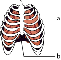

2023年北京中考生物 第27题 解析
27. 肺活量是《国家学生体质健康标准》中的测试指标之一。
（1）肺活量能体现肺与外界进行______的能力。测量肺活量时应尽力吸气后再______，取三次测量的______（填“最大值”或“平均值”）。
（2）研究者采用两种不同训练方式对中学生进行体育训练，一周两次，持续12周后，测算肺活量的提升率。
训练方式1：一组训练后，心率恢复到平静状态时，即开始下一组训练；
训练方式2：一组训练后，心率维持在较高水平时，即开始下一组训练。
①运动时，人体的呼吸频率和深度相应增加，使如图所示的[a]肋间肌和[b]______功能加强，胸廓扩大和缩小的幅度______。训练结果表明，两种方式均可以提高肺活量。

②与训练方式1相比，训练方式2肺活量的提升率更高，这主要是由于该方式训练过程中，两组训练间______。
【答案】（1） ①. 气体交换 ②. 尽力呼气 ③. 最大值
（2） ①. 膈##膈肌 ②. 增大 ③. 恢复时间较短
【解析】
【分析】肺活量是指在一次吸气排气完成过程中，整个呼吸系统容量所能吸入或排出的最大量的气体，又可称为最大呼吸容量、最大摄气量或静止量等。图中a肋间肌，b膈（膈肌）。
【小问1详解】
肺活量是人尽力吸气后再尽力呼气所能呼出的气体量，肺活量能体现肺与外界进行气体交换的能力。测量肺活量时应尽力吸气后再尽力呼气，尽力呼出所能呼出的气体。测量肺活量时，应取3次测量值的最大值，而不是平均值。
【小问2详解】
人体在吸气时，肋间肌和膈肌收缩，胸廓容积扩大，肺内气压低于外界气压，实现吸气；当肋间肌和膈肌舒张时，胸廓容积缩小，肺内气压高于外界气压，实现呼气。胸廓的运动实现了吸气和呼气，所以当人体的呼吸频率和深度相应增加时，使如图所示的[a]肋间肌和[b]膈肌功能加强，胸廓扩大和缩小的幅度增大，从而提高肺活量。在训练方式1中，一组训练后，心率恢复到平静状态时才开始下一组训练，这意味着每组训练之间有相对较长的休息时间。而在训练方式2中，一组训练后，心率维持在较高水平时即开始下一组训练，这意味着每组训练之间的休息时间相对较短。由于训练方式2中间休息时间相对较短，导致了更高的训练强度和更多的肌肉疲劳，从而促使身体适应和增强肺活量。间歇性运动恢复时间短可以加快身体代谢率，增加能量消耗，对于提升肺活量起到重要的作用。此外，较少的休息时间还可以提高身体的耐力和心肺功能。所以与训练方式1相比，训练方式2肺活量的提升率更高，这主要是由于该方式训练过程中，两组训练间恢复时间较短。